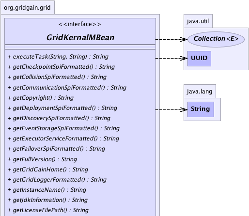
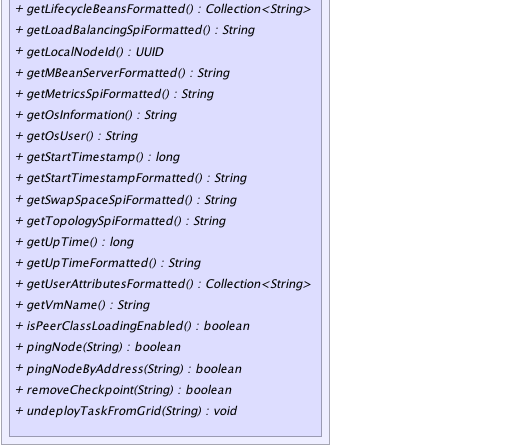

|
|

|

|
|

|

|

|
GridGain™ 3.6.0c
Community Edition |
|||||||||
| PREV CLASS NEXT CLASS | FRAMES NO FRAMES | |||||||||
| SUMMARY: NESTED | FIELD | CONSTR | METHOD | DETAIL: FIELD | CONSTR | METHOD | |||||||||
@GridMBeanDescription(value="MBean that provides access to Kernal information.") public interface GridKernalMBean
This interface defines JMX view on kernal.
| Wiki | |
| Forum |
|  |
|  |
| Method Summary | |
|---|---|
String |
executeTask(String taskName,
String arg)
A shortcut method that executes given task assuming single java.lang.String argument
and java.lang.String return type. |
String |
getCheckpointSpiFormatted()
Gets a formatted instance of configured checkpoint SPI implementation. |
String |
getCollisionSpiFormatted()
Gets a formatted instance of configured collision SPI implementations. |
String |
getCommunicationSpiFormatted()
Gets a formatted instance of fully configured SPI communication implementation. |
String |
getCopyright()
Gets copyright statement for GridGain product. |
String |
getDeploymentSpiFormatted()
Gets a formatted instance of fully configured deployment SPI implementation. |
String |
getDiscoverySpiFormatted()
Gets a formatted instance of configured discovery SPI implementation. |
String |
getEventStorageSpiFormatted()
Gets a formatted instance of fully configured event SPI implementation. |
String |
getExecutorServiceFormatted()
Gets a formatted instance of fully configured thread pool that is used in grid. |
String |
getFailoverSpiFormatted()
Gets a formatted instance of fully configured failover SPI implementations. |
String |
getFullVersion()
Gets string presentation of the version. |
String |
getGridGainHome()
Gets GridGain installation home folder. |
String |
getGridLoggerFormatted()
Gets a formatted instance of logger that is in grid. |
String |
getInstanceName()
Gets optional kernal instance name. |
String |
getJdkInformation()
Gets JDK information. |
String |
getLicenseFilePath()
Gets file path of the license. |
Collection<String> |
getLifecycleBeansFormatted()
Gets toString() representation of of lifecycle beans configured
with GridGain. |
String |
getLoadBalancingSpiFormatted()
Gets a formatted instance of fully configured load balancing SPI implementations. |
UUID |
getLocalNodeId()
Unique identifier for this node within grid. |
String |
getMBeanServerFormatted()
Gets a formatted instance of MBean server instance. |
String |
getMetricsSpiFormatted()
Gets a formatted instance of fully configured local metrics SPI implementation. |
String |
getOsInformation()
Gets OS information. |
String |
getOsUser()
Gets OS user. |
long |
getStartTimestamp()
Get start timestamp of the kernal. |
String |
getStartTimestampFormatted()
Gets string presentation of the kernal start timestamp. |
String |
getSwapSpaceSpiFormatted()
Gets a formatted instance of configured swapspace SPI implementations. |
String |
getTopologySpiFormatted()
Gets a formatted instance of fully configured topology SPI implementation. |
long |
getUpTime()
Gets up-time of the kernal. |
String |
getUpTimeFormatted()
Gets string presentation of up-time for the kernal. |
Collection<String> |
getUserAttributesFormatted()
Gets a collection of formatted user-defined attributes added to this node. |
String |
getVmName()
Gets VM name. |
boolean |
isPeerClassLoadingEnabled()
Returns true if peer class loading is enabled, false
otherwise. |
boolean |
pingNode(String nodeId)
Pings node with given node ID to see whether it is alive. |
boolean |
pingNodeByAddress(String host)
Pings node with given host name to see if it is alive. |
boolean |
removeCheckpoint(String key)
This method allows manually remove the checkpoint with given key. |
void |
undeployTaskFromGrid(String taskName)
Makes the best attempt to undeploy a task from the whole grid. |
| Method Detail |
|---|
@GridMBeanDescription(value="File path of the license.") String getLicenseFilePath()
@GridMBeanDescription(value="String presentation of the GridGain version.") String getFullVersion()
@GridMBeanDescription(value="Copyright statement for GridGain product.") String getCopyright()
@GridMBeanDescription(value="String presentation of the kernal start timestamp.") String getStartTimestampFormatted()
@GridMBeanDescription(value="String presentation of up-time for the kernal.") String getUpTimeFormatted()
@GridMBeanDescription(value="Start timestamp of the kernal.") long getStartTimestamp()
@GridMBeanDescription(value="Up-time of the kernal.") long getUpTime()
@GridMBeanDescription(value="Collection of formatted user-defined attributes added to this node.") Collection<String> getUserAttributesFormatted()
Note that grid will add all System properties and environment properties to grid node attributes also. SPIs may also add node attributes that are used for SPI implementation.
@GridMBeanDescription(value="Formatted instance of logger that is in grid.") String getGridLoggerFormatted()
@GridMBeanDescription(value="Formatted instance of fully configured thread pool that is used in grid.") String getExecutorServiceFormatted()
@GridMBeanDescription(value="GridGain installation home folder.") String getGridGainHome()
@GridMBeanDescription(value="Formatted instance of MBean server instance.") String getMBeanServerFormatted()
@GridMBeanDescription(value="Unique identifier for this node within grid.") UUID getLocalNodeId()
@GridMBeanDescription(value="Whether or not peer class loading (a.k.a. P2P class loading) is enabled.") boolean isPeerClassLoadingEnabled()
true if peer class loading is enabled, false
otherwise. Default value is true.
When peer class loading is enabled and task is not deployed on local node, local node will try to load classes from the node that initiated task execution. This way, a task can be physically deployed only on one node and then internally penetrate to all other nodes.
true if peer class loading is enabled, false
otherwise.@GridMBeanDescription(value="String representation of lifecycle beans.") Collection<String> getLifecycleBeansFormatted()
toString() representation of of lifecycle beans configured
with GridGain.
toString() representation of all lifecycle beans configured
with GridGain.@GridMBeanDescription(value="This method allows manually remove the checkpoint with given key. Return true if specified checkpoint was indeed removed, false otherwise.") @GridMBeanParametersNames(value="key") @GridMBeanParametersDescriptions(value="Checkpoint key to remove.") boolean removeCheckpoint(String key)
key.
key - Checkpoint key.
true if specified checkpoint was indeed removed, false
otherwise.@GridMBeanDescription(value="Pings node with given node ID to see whether it is alive. Returns whether or not node is alive.") @GridMBeanParametersNames(value="nodeId") @GridMBeanParametersDescriptions(value="String presentation of node ID. See java.util.UUID class for details.") boolean pingNode(String nodeId)
nodeId - String presentation of node ID. See UUID.fromString(String) for
details on string formatting.
@GridMBeanDescription(value="Makes the best attempt to undeploy a task from the whole grid.")
@GridMBeanParametersNames(value="taskName")
@GridMBeanParametersDescriptions(value="Name of the task to undeploy.")
void undeployTaskFromGrid(String taskName)
throws JMException
Note that GridGain maintains internal versions for grid tasks in case of redeployment. This method will attempt to undeploy all versions on the grid task with given name.
JMException - Thrown if undeploy failed.taskName - Name of the task to undeploy. If task class has GridTaskName annotation,
then task was deployed under a name specified within annotation. Otherwise, full
class name should be used as task's name.
@GridMBeanDescription(value="A shortcut method that executes given task assuming single String argument and String return type. Returns Task return value (assumed of String type).")
@GridMBeanParametersNames(value={"taskName","arg"})
@GridMBeanParametersDescriptions(value={"Name of the task to execute.","Single task execution argument (can be null)."})
String executeTask(String taskName,
String arg)
throws JMException
java.lang.String argument
and java.lang.String return type.
JMException - Thrown in case when execution failed.taskName - Name of the task to execute.arg - Single task execution argument (can be null).
java.lang.String type).@GridMBeanDescription(value="Pings node with given host name to see if it is alive. Returns whether or not node is alive.") @GridMBeanParametersNames(value="host") @GridMBeanParametersDescriptions(value="Host name or IP address of the node to ping.") boolean pingNodeByAddress(String host)
host - Host name or IP address of the node to ping.
@GridMBeanDescription(value="Formatted instance of configured discovery SPI implementation.") String getDiscoverySpiFormatted()
@GridMBeanDescription(value="Formatted instance of fully configured SPI communication implementation.") String getCommunicationSpiFormatted()
@GridMBeanDescription(value="Formatted instance of fully configured deployment SPI implementation.") String getDeploymentSpiFormatted()
@GridMBeanDescription(value="Formatted instance of configured checkpoint SPI implementation.") String getCheckpointSpiFormatted()
@GridMBeanDescription(value="Formatted instance of configured collision SPI implementations.") String getCollisionSpiFormatted()
@GridMBeanDescription(value="Formatted instance of configured swapspace SPI implementations.") String getSwapSpaceSpiFormatted()
@GridMBeanDescription(value="Formatted instance of fully configured event SPI implementation.") String getEventStorageSpiFormatted()
@GridMBeanDescription(value="Formatted instance of fully configured failover SPI implementations.") String getFailoverSpiFormatted()
@GridMBeanDescription(value="Formatted instance of fully configured load balancing SPI implementations.") String getLoadBalancingSpiFormatted()
@GridMBeanDescription(value="Formatted instance of fully configured topology SPI implementation.") String getTopologySpiFormatted()
@GridMBeanDescription(value="Formatted instance of fully configured local metrics SPI implementation.") String getMetricsSpiFormatted()
@GridMBeanDescription(value="OS information.") String getOsInformation()
@GridMBeanDescription(value="JDK information.") String getJdkInformation()
@GridMBeanDescription(value="OS user name.") String getOsUser()
@GridMBeanDescription(value="VM name.") String getVmName()
@GridMBeanDescription(value="Optional kernal instance name.") String getInstanceName()
null.
|
GridGain™ 3.6.0c
Community Edition |
|||||||||
| PREV CLASS NEXT CLASS | FRAMES NO FRAMES | |||||||||
| SUMMARY: NESTED | FIELD | CONSTR | METHOD | DETAIL: FIELD | CONSTR | METHOD | |||||||||
|
GridGain - Real Time Big Data
|
|
|
|